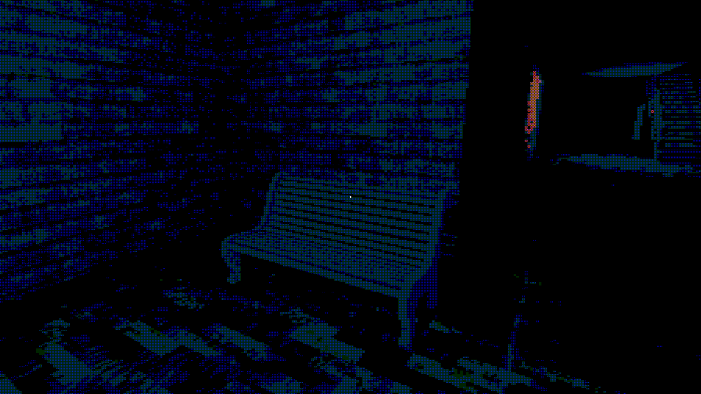

Kach
"Beakon" is a 3D horror game made in Unity. It was a 15-week project made in a team of 4 as my USC Intermediate Game Project.
As the co-director, designer, and engineer in this team, Designed the overall idea, narrative, and game loops; implemented the game's gameplay mechanics and features; also helped recruit two other teammembers to join our team; conducted formal playtests and held review meetings.

Following guidance from Richard Lemarchand, I partnered with a fellow student
Bhargav Modha and created this 3D horror game. It was developed in collaboration
with students from Berklee College of Music and Otis College of Art and Design.
This is the first complete game I developed from start to finish. I learned about the four
phases of game development: Ideation, Pre-production, Full-Production, and Post-Production.
I also created game documents such as Design Goals and Game Design Macro. I also utilized
Burndown Charts and Bug Tracker. In addition, I held formal playtests and participated in
milestone review meetings. I was able to
become much more proficient in Unity. I also tried other areas of game development
that I was not familiar with such as 3D modeling. More importantly, the making of
this game gave me invaluable experience in communication, collaboration, and leadership.
Check out our itch.io page for Kach.
Features
The Key features of Kach are:
- Engaging gameplay which utilizes environmental storytelling.
- Unique low-poly monochromatic visuals.
- A intriguing and thrilling mystery waiting to be unveiled.
- Suspenful soundtrack and sound effects.
- Accessibility friendly option settings.